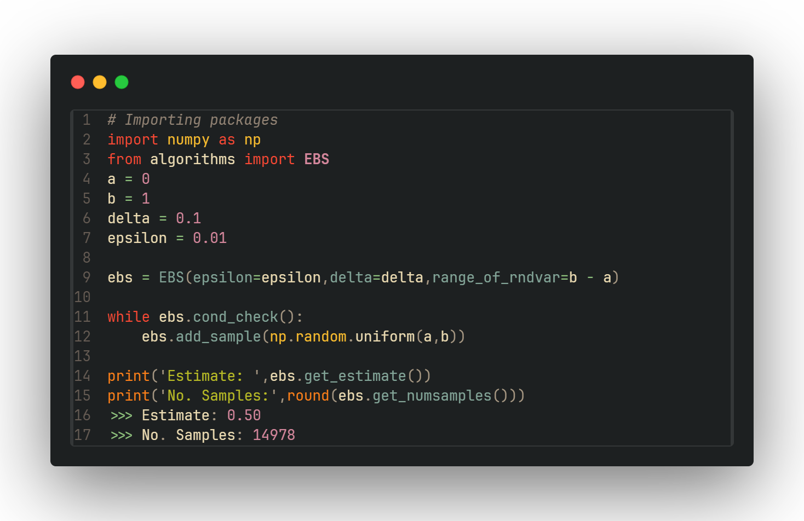

Details on EBS Code
This is serves as a brief introduction to my implementation of the EBS algorithm, more details can be found on GitHub .
.
Below Python code for an examplatory use of EBS is show. We sample our random variables according to a uniform distribution U(0,1) The usage is simple:
Note that this version of EBS uses an absolute accuracy, which in contrast to an relative accuracy, handles random variables
with an ≈ zero expectation value better.
The main advantage of EBS in comaprison to the commonly used Höffdings inequality comes from the fact that EBS utilises empirical data
from the samples and is thus able to provide more thight bounds in certain cases.
